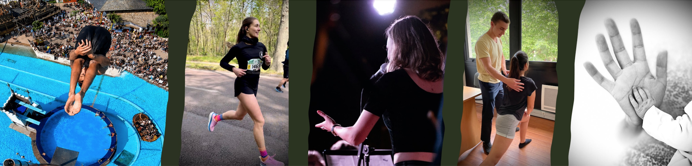
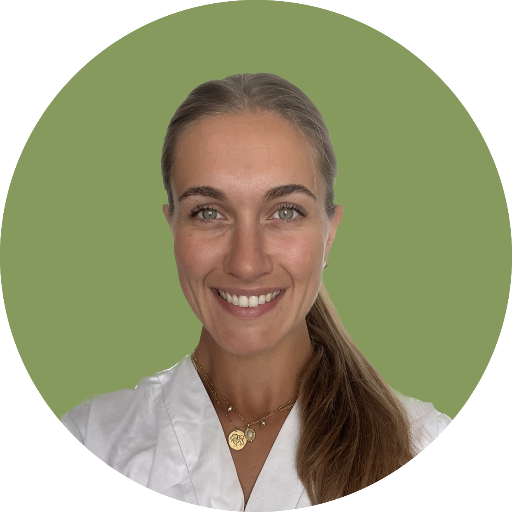

Un lieu où l'ostéopathie et le coaching redonnent au mouvement toute sa place.
Action · Alignement · ActivationLe cabinet
L'Académie de Bellefon réunit des ostéopathes, coachs et professionnels issus des institutions les plus prestigieuses. Notre approche intègre rigueur clinique, empathie et précision à des méthodes de coaching éprouvées par les plus hauts niveaux de performance.
Que vous veniez pour une douleur chronique, une préparation sportive, un accompagnement vers une performance spécifique ou autre, chaque séance est pensée pour révéler votre plein potentiel — physique, mental, et humain.
Nous reçevons sur rendez-vous à Paris, avec une disponibilité étendue pour s'adapter à vos contraintes.
Vos praticiens
Ostéopathe, conférencier et spécialiste de la gestion du stress, Emmanuel accompagne celles et ceux qui souhaitent retrouver un équilibre durable entre le corps, les émotions et le mental. Son parcours atypique, de CentraleSupélec à l'ostéopathie en passant par la finance et le plongeon de haut vol, nourrit une approche unique de la performance humaine et de la résilience. À l'écoute, exigeant et profondément engagé, il aide chacun à retrouver ses ressources pour avancer avec plus de sérénité et de justesse. Sa conviction : l'alignement du Corps, du Cœur et de l'Esprit ouvre la voie à des transformations durables.
Prendre RDV sur Doctolib
Ostéopathe et coach sportif, Audrey accompagne celles et ceux qui souhaitent retrouver un corps plus libre, plus fort et durablement en équilibre. Elle s'appuie sur une approche globale, nourrie par plusieurs milliers d'heures de coaching et une solide expérience clinique. Son écoute, sa douceur et la précision de son analyse lui permettent de proposer un accompagnement entièrement personnalisé. Sa conviction est simple : la vie, c'est le mouvement. En redonnant au corps sa mobilité, chacun retrouve le plaisir de bouger, de respirer et de vivre pleinement.
Prendre RDV sur DoctolibLa confiance de nos patients
Le podcast du cabinet
Quelques éléments sur la performance, la santé et le mouvement convertis en podcast, à écouter sans modération.
Votre première séance
Réservez directement en ligne votre bilan ostéopathique complet initial, sans attente.